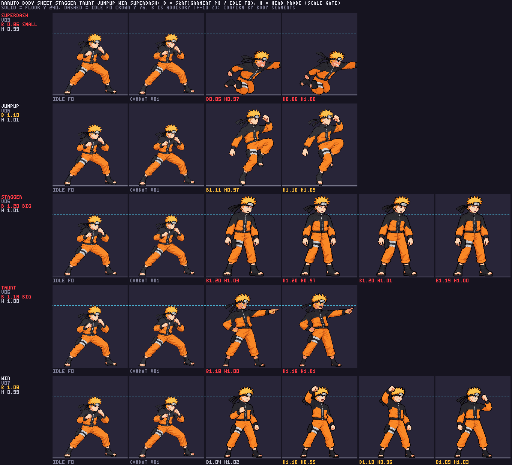
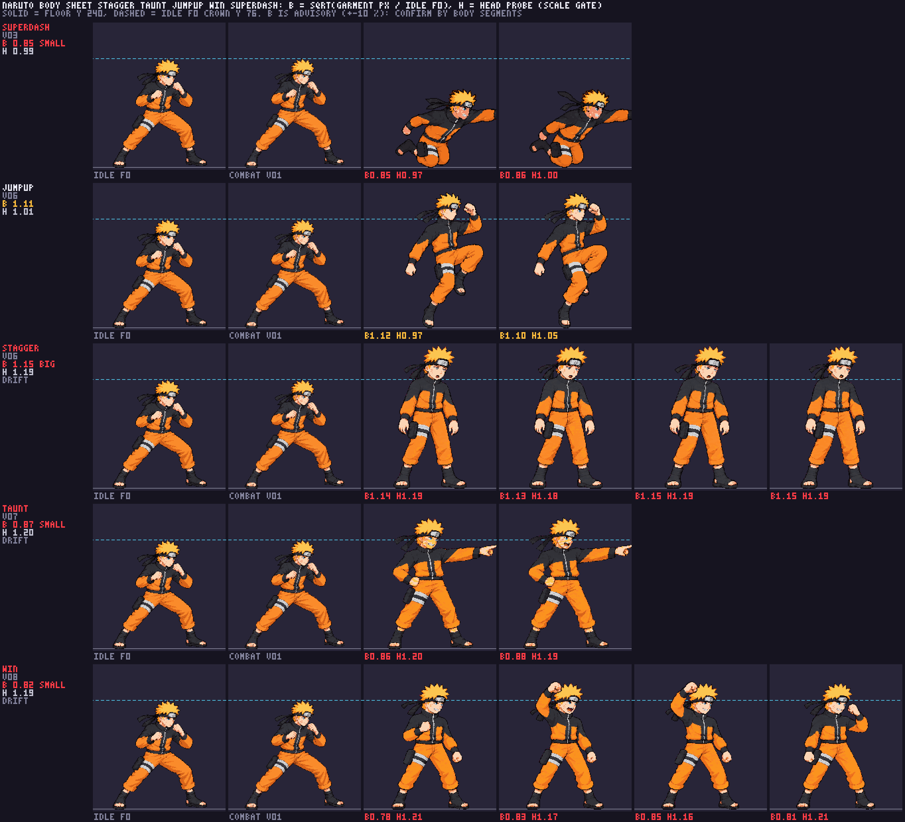
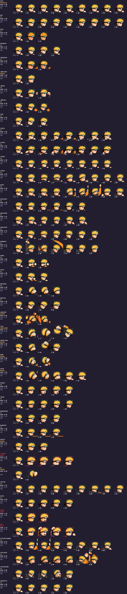

Unapproved candidates. Strict pack failed. This page plays a separate diagnostic atlas. It does not replace the game’s production sheet. Claude must calibrate and check contact before these drawings can receive a scale pass.
Three measured torso failures were redrawn: stagger v06, taunt v07 and win v08. Each used one new built-in call, after three historical title calls. JumpUp v06 and superDash v03 remain unchanged: their projected segments are inconclusive, so neither is marked passed.
Every-frame segment measurements · Landmark evidence and uncertainty · Strict pack failure · Candidate inventory · QA and handoff · Diagnostic lineup
Head column measures visible hair crown to chin (±2 px), not hidden skull height. Torso uses collar/zipper-to-hem markers (±2 px total). Arm and leg chains are garment-obscured estimates (±12 px total); no estimate crossing the ±6% boundary counts as a pass. Three-quarter shoulders, rotated/hidden limbs and sole-on shoes are explicitly skipped.


